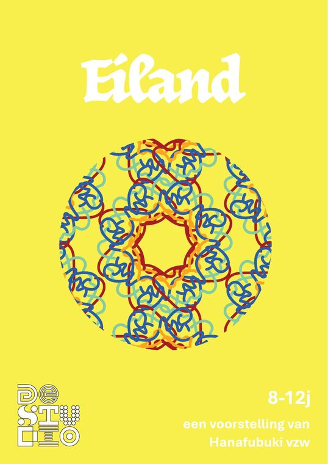

Profiel
Ik ben Valentina, 21 jaar en student in het graduaat Digitale Vormgeving. In mijn vrije tijd teken, schilder en animeer ik, en ik maak graag allerlei creatieve dingen. Via games kwam ik al jong in de online wereld terecht en die passie is gebleven. Ik volg op de voet wat AI vandaag kan en werk er ook mee samen. Ik wil blijven groeien, nieuwe dingen leren en ze meteen toepassen.
Opleiding
2025 – heden
Graduaat Digitale Vormgeving
AP Hogeschool Antwerpen
2021 – 2023
Beeldende Vorming · diploma secundair
de!Kunsthumaniora Antwerpen · 5de en 6de middelbaar
2017 – 2021
Moderne Wetenschappen-Talen
1ste tot 4de middelbaar
Ervaring
3 jaar
Studentenjob · Delhaize
1 jaar
Studentenjob · Kinepolis Antwerpen
Programma's
- After Effects★★★★★
- HTML & CSS★★★★★
- Photoshop★★★★★
- Vibecoden★★★★★
- Illustrator★★★★★
- InDesign★★★★★
- Groeivermogen★★★★★
Sterktes
- Harde werker
- Leert snel
- Zelfstandig
- Betrouwbaar
- Geduldig



meer werk op
mijn portfolio-site!
mijn portfolio-site!